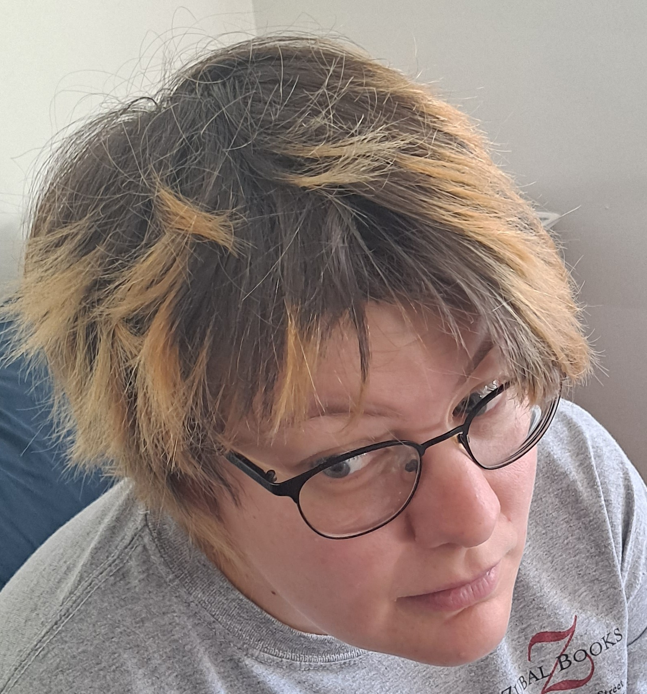

Would you like to give this sad academic a forever home? They specialize in geometry and topology, and really love math and teaching. They also enjoy long nature walks, hanging out with their friends, the occasional sci-fi or fantasy book and TV show, and doing various arts and crafts. They are low-energy and low-maintenance, are well-socialized, and would get along with both older and younger academics in your department. They also like being around children, both literal and of college age. If your department is looking for a new teacher and researcher with a big heart and many happy years left, please consider giving Neza a forever home!
Here are some things their loved ones and their students have said about Neza:
Neza is one of the best professors I've ever had here. They are excellent at explaining complex concepts in ways that I can grasp and facilitating a great class environment. They also did a great job at making the content engaging. I had no interest in geometry coming into this class, and now I am very interested in geometry and think about it in my daily life.
I really do believe [Neza] would do a good job at one of these places
This course went much better than I originally expected given past experiences in this topic. Neza is amazing to have a teacher, and was always helpful, respectful, and caring of their students. I feel better about this kind of subject since taking this course.
I would love to go back in age and forward in time to be a Neza student at some nice chill liberal arts college
The instruction for this course considering it is an IBL class was wonderful. Neza had the perfect amount of lecturing and helping while still pushing all of us as students.
[Neza] would have fit right in at my undergrad, everyone would have loved [them]
Neza is quite possibly the best professor I have been taught by at the University of Michigan. I feel like I have learned so much in this class but in such a reasonable and feasible manner, unlike many other courses. Neza's office hours are extremely helpful, and they instruct with the perfect amount of guidance for an IBL course. They have really helped me revitalize my passion for math and I am grateful for that.